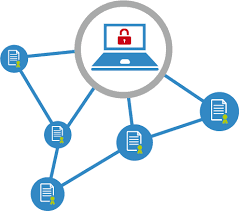

Seguridad e interoperabilidad

La característica principal de un Servicio Web es que le permite cierto grado de flexibilidad, accesibilidad yinteroperabilidad. Esto permite que los desarrolladores abstraigan la lógica de negocio y se centren en el desarrollo del servicio sin preocuparse de los criterios anteriormente citados.
Como objetivos básicos a cubrir por la seguridad de un servicio WEB
El Instituto de Ingenieros Eléctricos y Electrónicos (IEEE) define interoperabilidad como la habilidad de dos o más sistemas o componentes para intercambiar información y utilizar la información intercambiada.
La característica principal de un Servicio Web es que le permite cierto grado de flexibilidad, accesibilidad y interoperabilidad. Esto permite que los desarrolladores abstraigan la lógica de negocio y se centren en el desarrollo del servicio sin preocuparse de los criterios anteriormente citados.
Como objetivos básicos a cubrir por la seguridad de un servicio WEB
Es necesario asegurar que existe una autenticación mutua entre el cliente que accede a los servicios web y el proveedor de dichos servicios.
Se debe mantener una política de autorización del acceso a recursos y, más importante, a operaciones y procesos en un entorno en el que debe administrarse y controlarse el acceso de clientes, proveedores, vendedores, competidores y los posibles ataques que reciban de personal externo.
Mantener al cliente identificado, de manera que se identifique una sola vez y pueda acceder a servicios en diversos sistemas, sin que resulte necesario identificarse nuevamente en cada uno de ellos.
Controlar y asegurar la confidencialidad de los datos intercambiados, ya que SOAP no es capaz de cifrar la información, la cual viaja en claro a través de la red.Es necesario asegurar la comunicación con algún estándar que permita crear un canal seguro de comunicación. El estándar ya firmemente establecido de creación de canales seguros SSL y el cifrado de partes específicas de documentos mediante el cifrado XML son las direcciones que se están siguiendo en este terreno.
Se debe asegurar la integridad de los datos, de manera que estén protegidos a los posibles ataques o a manipulaciones fortuitas. En este campo se está utilizando el estándar de firmas XMLDSIG, que permiten la firma de partes específicas del documento XML.
Comprobar que no se repudian las operaciones, para lo cual es necesario mantener firmas en XML.